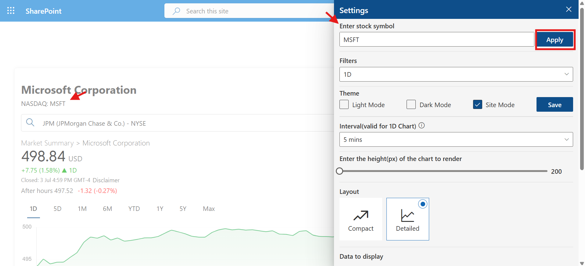
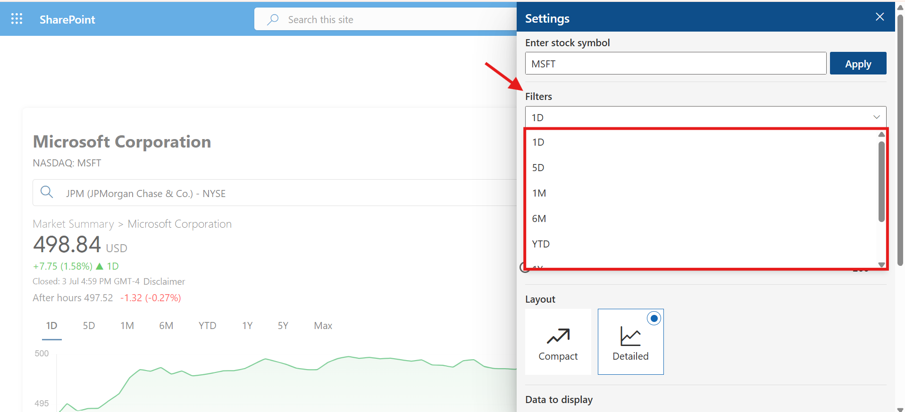
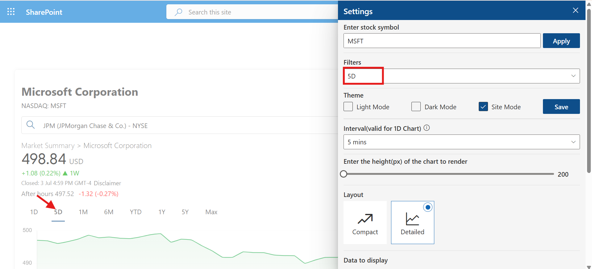
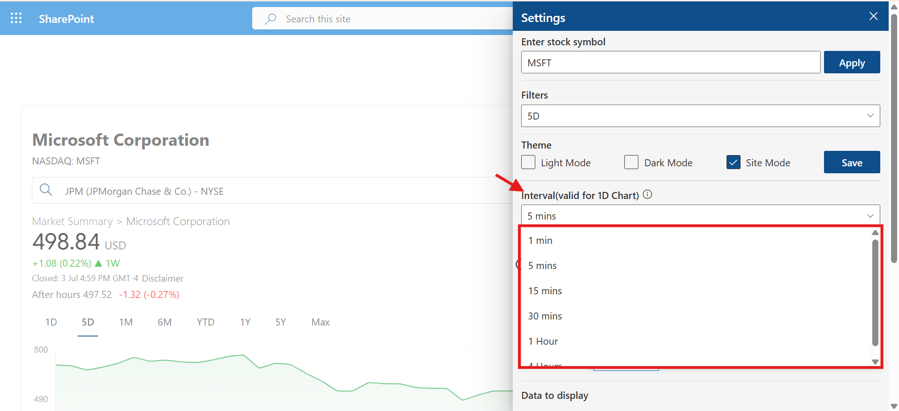
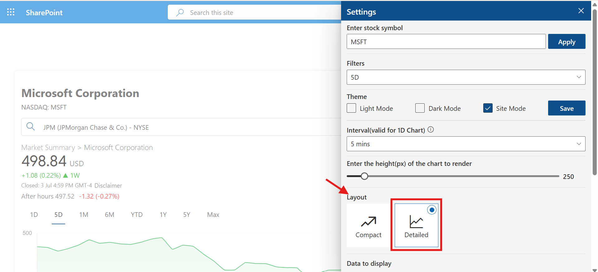
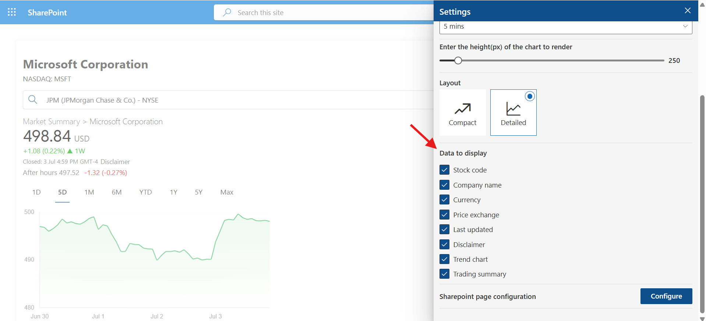

Settings
Enter Stock Symbol
Admins can set a default stock symbol that will automatically load each time the user opens the application. This enhances user experience by preloading the most relevant or frequently used stock information.
Once the default stock is selected and the page is refreshed, the selected stock will be displayed by default.
Filters
Filters help narrow down the displayed data. Admins can define default filters that will be applied every time the application is loaded.
Once configured and refreshed, the application will apply the default filter automatically without user input.

Theme
Select the default theme to apply across the interface:
- Light: Bright and clean interface (default).
- Dark: A dark theme ideal for low-light environments.
- Site: Inherits the SharePoint site theme.
Interval (valid for 1D Chart)
This setting allows you to define the refresh interval for the 1-day chart view.
Available intervals may include options like 1 minute, 5 minutes, and 15 minutes. Shorter intervals show more detailed activity; longer intervals highlight overall trends.
Enter Chart Height (px)
Customize the vertical height of the chart in pixels. Useful for adjusting visibility on different screen sizes.
You can slide the control to increase or decrease the height as per your layout preference.
Layout
Choose how data is visually displayed in the web part:
- Detailed Layout: Full-feature chart view for deeper analysis.
- Compact Layout: Simplified version for a quick overview.

Data to Display
Enable or disable components shown in the web part:
